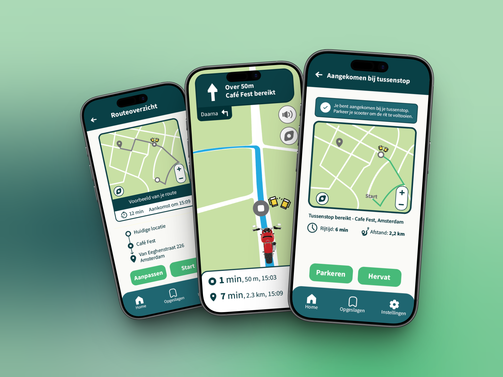
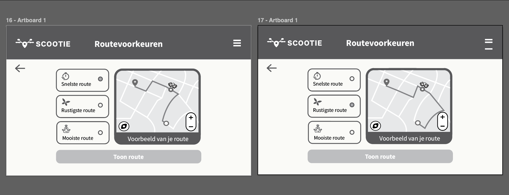
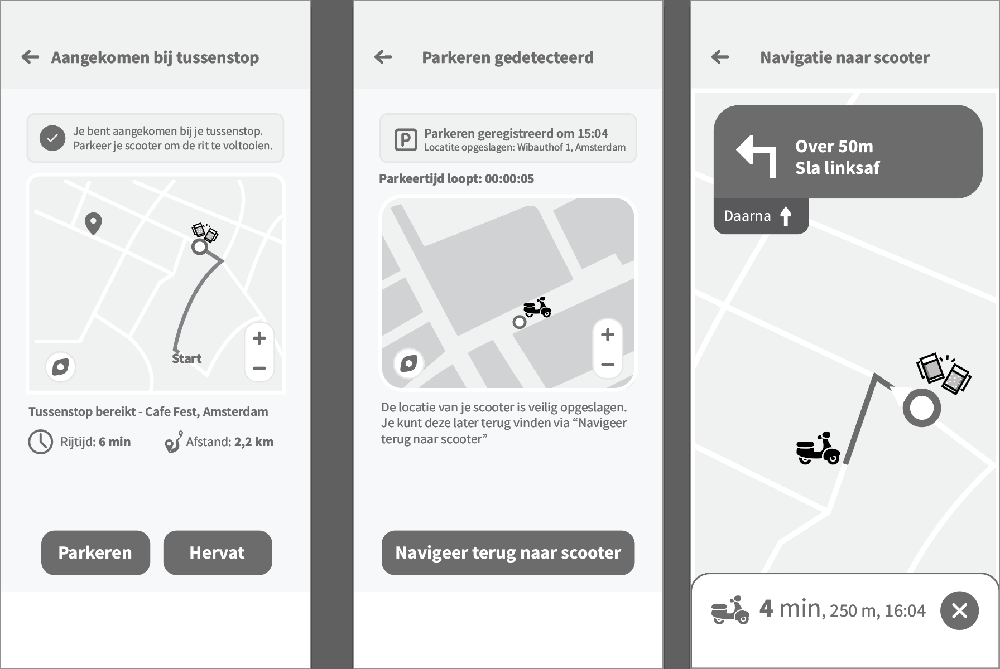
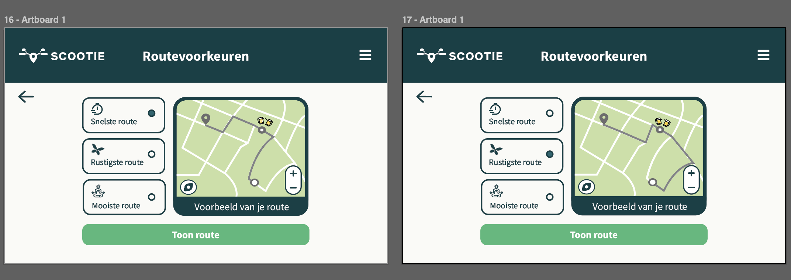
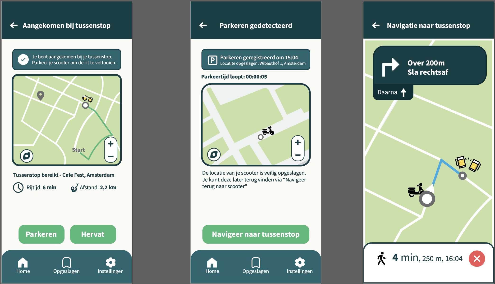
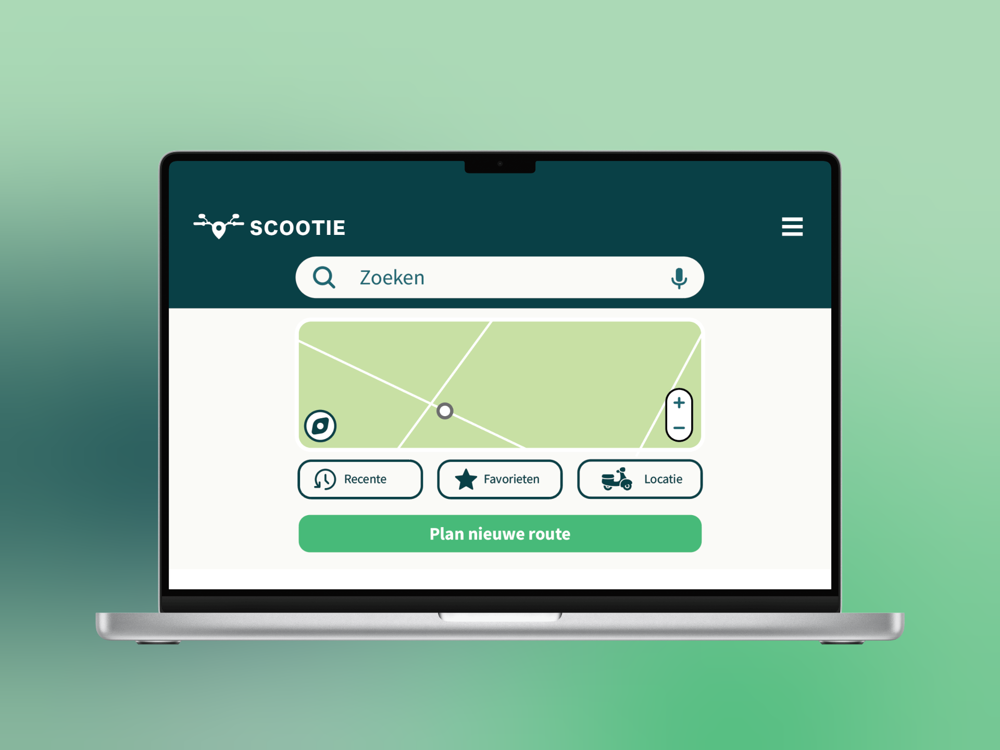
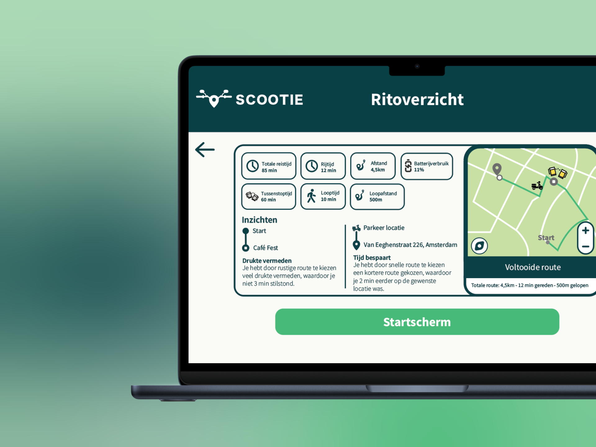

RESPONSIVE MULTI DEVICE DESIGN
Responsive Multi Device Design, Communication and Multimedia Design,
(Amsterdam University of Applied Sciences, 2025)
For this project I prototyped a navigation app for scooters called Scootie. The assignment was to design a happy flow that spans across multiple devices.
The concept: beforehand you plan your route at home on your laptop, during the ride you navigate via your phone, and afterwards you review the trip back on your laptop. Everything could technically work on one device, but the goal was to smartly divide the experience across multiple screens.

PROJECT INFO
MY DESIGN PROCESS
Lo-fi → Wireframes → Hi-fi → Multimedia flow
I started with lo-fi sketches to determine the structure and flow. Then I worked out the wireframes in greyscale. These were then turned into hi-fi screens in Figma, after which I put together a complete multimedia flow with all screens per device.

MORE INFO
The concept
Scootie is a navigation app designed for scooter riders. What makes this project special is the distribution across multiple devices: the laptop for planning and reviewing, the phone for real-time navigation on the road. This way each screen fits the moment and context of use.
Lo-fi prototype & Wireframes
The first step was creating lo-fi sketches to determine the happy flow. I roughly worked out the screens per device in greyscale, without paying too much attention to visual design.


Hi-fi prototype
From the wireframes I developed the screens into hi-fi designs in Figma.


Hi-fi multimedia flow
Finally I built a multimedia flow in which all screens per device are combined into one continuous story.

RESULT


Let's build something together!
I'm currently open to internships, freelance projects and collaborations.
Let's get in touch!